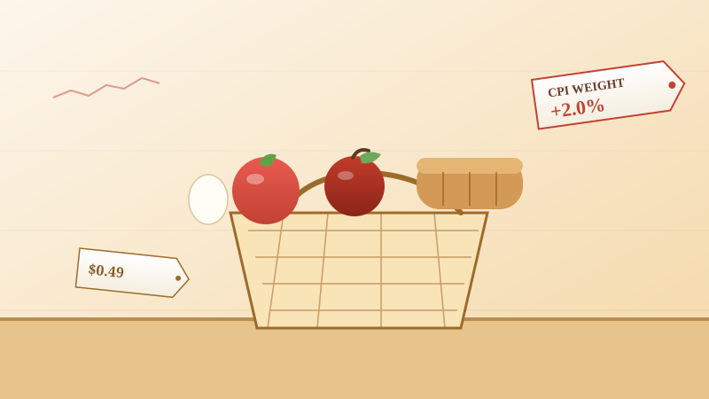
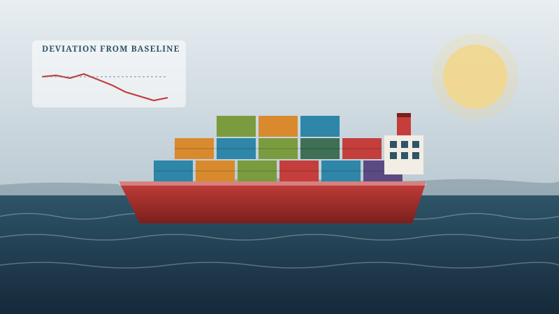
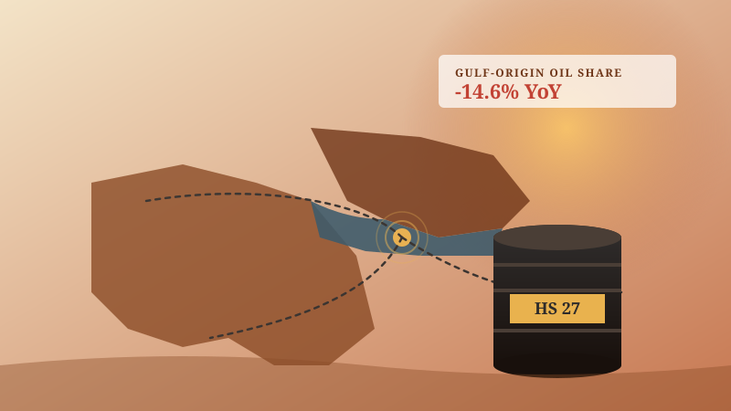
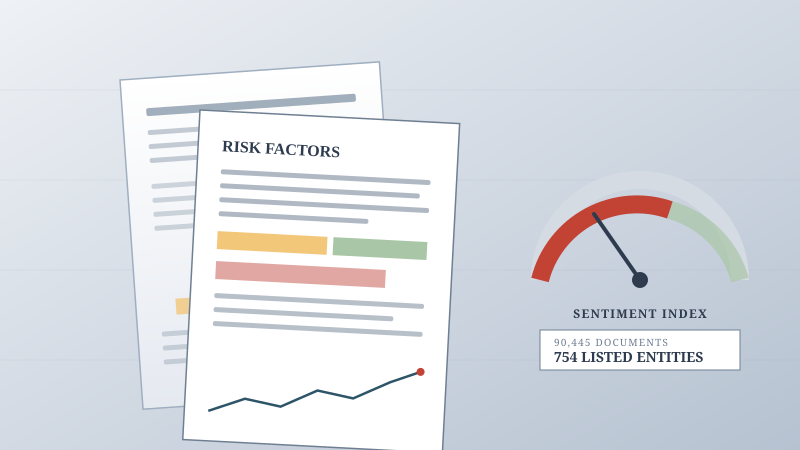
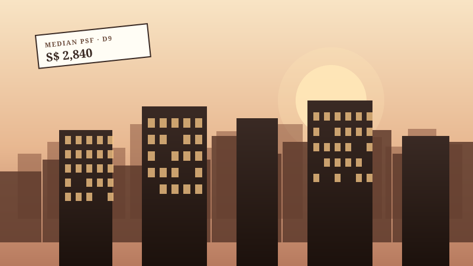
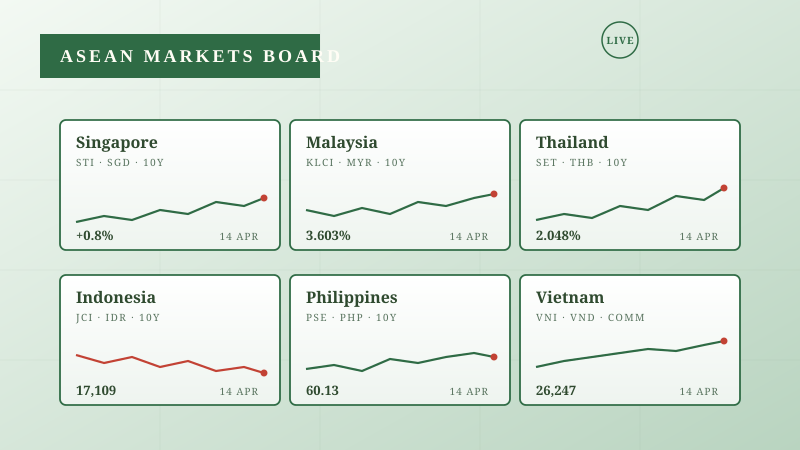

Economic dashboards, built with AI.
Six end-to-end economic analytics projects — from grocery inflation to shipping nowcasts — built in roughly a month by one economist using Anthropic's Cowork. Each card links to the live dashboard.

Prices · Inflation
Singapore Grocery Price Tracker
Daily prices for ~90,000 SKUs across Singapore's three major supermarkets, classified into official CPI categories and aggregated into a chained price index.
Open dashboard →
Shipping · Nowcasting
Global Shipping Nowcast
Near real-time vessel traffic deviations from counterfactual baselines, tracking disruption at major chokepoints and ports using IMF PortWatch AIS data.
Open dashboard →
Trade · Geopolitics
Iran Crisis Trade Monitor
Monthly bilateral trade flows from eight major economies, tracking the impact of the Hormuz closure on oil, fertilizer, and food supply chains.
Open dashboard →
Text · Sentiment
SGX Sentiment Index
Sentiment and uncertainty indices extracted from 90,000+ SGX-listed company filings, validated against official CPI and unemployment data.
Open dashboard →
Housing · Property
Singapore Property Market
Residential market intelligence across all 28 URA districts — sale prices, rental yields, days-on-market, and price cuts — refreshed daily.
Open dashboard →
Markets · ASEAN
ASEAN Markets Dashboard
Real-time FX, 10-year government bond yields, equities, and key commodities across six ASEAN economies, with full source attribution.
Open dashboard →